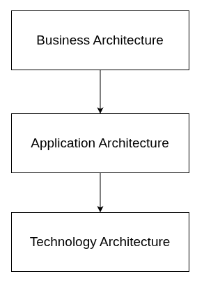
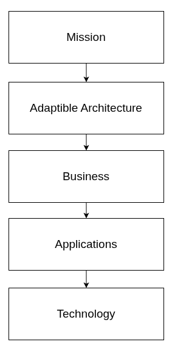

Evolving
Jeff Uren ★ 2026-09-01
When I first started out working in larger organisations I assumed that technology became difficult because there was essentially more of it. More people, more applications, more integrations, more process. Complexity was just a consequence of scale .
Some of the most technically complicated systems I've worked on have been surprisingly straightforward to evolve. Everyone understood roughly what the organisation was trying to do, and even though the implementation might have been difficult, the destination or outcome was usually pretty clear. The technology had something stable to organise itself around.
I've only ever seen the opposite in organisations whose purpose is research, public good, or humanitarian work. They rarely stand still for long enough that yesterdays picture of the organisation remains entirely accurate. New programmes appear because new opportunities emerge. Teams form around problems that barely existed a year ago. Funding changes, partnership changes. Sometimes even the language people use changes, because they're trying to describe work that nobody anticipated.
Someone from a more straightforward organisation would look at that and immediately label it "dysfunction", but in a lot of ways, that chaos is exactly what these organisations are supposed to do.
The really uncomfortable part is that a lot of enterprise architecture just sort of assumes the opposite. It assumes that if we spend enough time understanding today's organisation, we can produce a lasting picture of it, and that applications, data models, and integrations can gradually converge on that picture. That's a perfectly sensible approach if the organisation itself changes slowly. Personally, I'm not sure it's the right starting point when the organisation is expected to reinvent parts of itself every few years, or even every few quarters.
You really need to ask yourself whether the process of architecture should only ever really be an act of description, and taxonomizing things. It's job should really ought to be to make it safe for the organisation to actually change, change often, and change safely.
That doesn't sound particularly earth-shattering, but if you pick away at it, it takes you somewhere absolutely different than TOGAF.
Missions last longer than structures
Org charts are temporary things, even the departments, projects, and programmes are all more or less temporary. All of those things can likely disappear, and be reconstituted. But the mission itself will still be sitting there.
Building good architecture, in these contexts, means recognizing that and realizing that the mission is really the only thing that's likely to be here next year.
So instead of coupling technology to today's org chart, you have to model the enduring concepts that exist regardless of how the organisation chooses to arrange itself this year.
- People
- Organisations
- Funding
- Research
- Projects
- Assets
- Outcomes
All of this stuff generally survives a restructure.
Embalming your organisation
One of the things that I'm keenly aware of at the moment is how technology can end up preserving a version of the organisation that actually doesn't really exist anymore. That can very quickly convert into baggage the organisation drags around behind it.
As things change, the organisation leaves a long trail of detritus behind it. Old processes, abandoned sharepoint sites, unwatched mailboxes, teams channels from completed projects, orphaned services accounts, dashboards, reports, old decision logs, automation rules, duplicated glossaries. Eventually someone inherits the job of working out what can be deleted, what still matters, what's still part of some dependency chain, and what's basically residue of a decision made three reorgs ago.
Nobody sets out to intentionally create that ephemera, most people involved are usually just trying to make things simpler. Some new application promises to replace three older ones, or a shared platform reduces duplication between teams. Some common process means everyone works in roughly the same way. All of those decisions make sense when you look at them all alone, in isolation.
The difficulty kind of rears its head later, sometimes even just a month later, when someone says something lile:
"We'd like to start doing this."
Could be a new funding model, or partnership that didn't exist when the systems were designed. It could be a whole host of things really.
It's pretty damn often that you find out that the question doesn't fit very well anywhere. There's no application that can really accomodate it, or any existing business processes or workflows that kind of match up to it. The data is there, but you have to bend it into shapes that make sense for decisions that are a couple of years old already.
Someones going to "make it work" though. A lot of software is really accomodating if enough people are willing to stretch it around and poke it hard in a few places. That usually looks something like adding another field to a form, more charts in a report, more exceptions in an integration, or some team somewhere that writes a script that translates between two worlds that are accreting change at different rates.
A very simple example that came up recently was that we have an organisational reporting "dashboard" in Tableau that was designed to give a holistic view of operations across the organisation. What was built, wasn't what tableau was built to do, it's a weird little microcosm inside of tableau, a microsite, that has bent tableau to do things that it wasn't really designed for.
This is a pretty common spot for people to start to thrash and self-select other tools that they hope are more up to the task, but inevitably end up being a trade, where you solve one problem, but at the cost of some other new or old problem rearing it's head. It's not really a technical problem, not in the way we normally use the term in any case. It's really the result of an old decision mistaking the needs of the organisation at that specific point in time as something that was permanent.
There's some irony here, the organisations most exposed to change are often the ones whose architecture makes change most expensive.
If your purpose is to sell the same product like, a little more efficiently than you did last quarter, then stability is a full on asset. Your technology needs to reinforce habits that are probably already working well.
If, however, your purpose is to fund research, respond to humanitarian crises, improve public health or support scientific discovery, then instability isn't really something that you can eliminate. It's actually solid evidence that the whole organisation is acutely paying attention.
The naivete of tool choice
When people talk about architecture they focus on systems as purchases. Which applications should we buy? Which cloud provider should we use? Should we consolidate these databases? Should this service become an API?
Those are alright questions, but technology actually isn't where most of the complexity actually lives. We like to pretend it's complex, and a lot of the time, yes, there are multiple ways to solve for any given problem, but the reality is those solutions are usually well-trodden ground, or straightforward from an engineering perspective.
Talking about this always reminds me of an older horror comic by Junji Ito titled "The Enigma of Amigara Fault". In that story people are drawn to holes in a mountainside that are shaped just like them. Each person has a hole that fits them perfectly, and they feel compelled to enter them. Once they're inside, the tunnels twist and deform, forcing the people deeper while gradually reshaping their bodies. When they finally come out the other end they're these grotesque, elongated, and horrifyingly distorted versions of themselves. Completely broken from the journey. The real complexity lives in the organisation, and that complexity compounds when you try and bend a tool to the organisational problem, or worse, try and shove organisational complexity into a hole that isn't really designed for it.
Complexity accretes over time.
A Tangent: Friction & consequences
Most complexity I've encountered is in the spaces between people. In the hand-offs between teams, or places where one group has to wait for another before they finish some critical work.
After a while you realize that waiting is every bit as much a part of the architecture as databases and APIs are.
Maybe we should be drawing service ticket queues as part of our architecture diagrams?
If it takes six weeks for a team to get a new field into a system, that delay isn't just a process problem. It shapes what the organisation is actually capable of attempting. Over time, people stop proposing new ideas they know will spend months working their way through governance and ticket queues. They look for problems that fit the machinery instead. They self-select on both sides, tasks that are easy fits to the existing landscape get picked up quicker, and the more difficult ones languish in the backlog.
A lot of organisations counterintuitively move more and more engineering and specialisation behind those ticket queues to fight that. And that creates a whole host of other problems. People interacting with the system have to wait for experts to pick up and run with tickets, but their interface isn't the person, it's a system, so they become frustrated, the system becomes a bottleneck, and the people behind the queue become dehumanized because the axial point is a ticket and not a person.
When we're talking about a digital concept like a ticket, it's really easy to get angry at it, and even more easier to vocalize that anger and frustration. On the other side, it's extremely easy to take that anger and internalize that users frustration as being about you.
Some people will call this system "accountability", but it's really just a way of making sure that the people who are supposed to be helping the organisation adapt, are instead spending their time defending themselves. Behind those queues, the people who are supposed to be helping the organisation adapt, become demoralized, these people are built for collaboration, they want to interact, they want to have a laugh, get into the nitty-gritty details with you and figure out a solution that works. Through a ticket queue, they become faceless, disconnected from the mission, and their work becomes a series of transactions that they have to process. Ultimately, they become less effective at helping the organisation adapt, because the system they're working in isn't designed to help them do that. It erodes their judgement and autonomy instead of putting it front and center.
They start to build protective walls around themselves, tight standards, overly constrained processes, and heavy governance processes. These are the language of defense. This is how you defend yourself against continual criticism and standardized time pressures, because you can point to these things as a way of deflecting the ire of the people who are frustrated with you.
But the irony is that you're actually defending a bad system, you're defending the ticket queue when you should be defending your users. The system puts you in this position.
Users get angry at the people behind the tickets, not realizing that the whole ticket system is the thing you should be ticked off at.
Back to architecture
Without any one person intending it, the architecture starts influencing strategy, rather than just, supporting it.
Technology can end up preserving an organisation that has already disappeared.
Can technology allow an organisation to become something else? That's not a very tangible question, and it's pretty uncomfortable. I'm asking if we can think about architecture less as a description of the organisations current state, but as a way of making some future state less expensive to transition to than it would have otherwise been.
A lot of the difficult stuff organisations attribute to technology are actually only kind of indirectly technical. Delays, negotiations, and dependencies. A team can't begin until another teams done, new programmes wait for changes to the grants platform, some new useful idea spends months moving through approvals before anyone has written a line of code, or even just paid for a license seat. None of that shows up in an architecture diagram. Problem is they shape the organisation just as much as a database, network setup, or app do.
Systems absolutely matter, but they're just part of the picture. The architecture is made up of everything that constrains movement. Every dependency between teams, or piece of knowledge that's only in one place. Shared platforms to avoid duplication, governance boards set up to improve consistency. Some standard integration preventing teams from solving the same problem twice.
All that stuff accumulates, faster than you realize.
Knee-jerk reaction - Centralisation
Let's look at Geology. It's kind of a useful metaphor, and I like metaphors. A landscape doesn't come into existence all at once, it's the result of aeons of small deposits, new growth replacing old, erosion, rivers changing course, tectonic activity, and the occasional natural disaster.
Organisations calcify constraints like this, layer by layer, like sediment building up. A few years later people find themselves working around hills that weren't there before.
Centralization has concrete failings too because it's easy to understand when you propose a central team from a management and risk perspective, it makes total sense on the surface. And there are some capabilities which do benefit from this, from being shared. For instance, we really shouldn't re-invent security for every single project that comes along. There's definitely real value in collective experience, and there are problems that really should only ever be solved once and only once.
The problem with centralization is that for a host of other contexts, it just sort of changes where complexity lives rather than actually addressing it head on. A lot of decisions that were decentralized become concentrated, and the expertise follows. Responsibility follows after that.
Essentially, eventually, every meaningful change ends up going through the same handful of teams, and those teams end up carrying the accumulated needs of the entire organisation. They become indispensible, but so does their availability.
You then scale those teams to increase availability, but something funny happens. It turns out that the more people you add to a team, the more communication overhead, corrdination effort, and governance you need to keep them all aligned. That line is so fine, that it's easy to cross without realizing it. When you do, you realize you've ended up with the exact same bottleneck, but with propotionately higher costs.
Your org becomes coordinated at the cost of independence and autonomy.
Maybe we're mistaking consistency for simplicity? They're definitely not the same thing. An org where everyone uses the same tools could still be really difficult to change if every change depends on the same small group of people. Uniformity reduces variation, but it absolutely increases inertia.
You end up in a situation where all the work sure does look tidy, but it doesn't seem to be moving forward, or going anywhere actually.
Apps, apps, more apps
I think Applications need to be viewed with a heavy dose of criticality too though. "Enterprise software" has a concrete habit of becoming more important than anyone really meant it to be in the first place. Systems arrive to solve a particular problem, but over time they become the place where the organisation actually understands that part of itself.
Projects start to look like project management systems, relationships become whatever the CRM is capable of expressing, financial structures gradually inherit the assumptions of the ERP. If all you have is a hammer, everything starts to look like a nail. None of that happens because the software is really opinionated, it happens because people just naturally adopt the language of the tools they use every day.
Replacing those systems gets extremely hard. The challenge isn't even just moving the data, it's disentangling the organisation's own understanding of itself from the assumptions embedded within the software. Part of the problem here is that moving away from a system is considered something that we shouldn't think about for years, which is fine in a stable organisation, but in a rapidly changing one, it's a huge risk. We can off-handedly say "we'll just replace X with Y", but we more often build as though they're going to be there forever. Even though our cumulative experience is that someone up top is going to decide to change it. How many ToDo applications have you gone through since your first smart phone?
The other side of this is that software changes, rapidly. Even more so now that LLMs are being used for coding. But they go the other way too, they stagnate, and their licensing models can change and shift. I've seen multiple bait and switch tactics which force an organisation into high cost because the perceived cost to leave is so high. Commercial vendors benefit from that perception, it's a core part of their leverage.
Commercial vendors are incentivized and intentionally design and build their products to appeal to organisations which conform to a general, homegenuous set of requirements that they infer from previous clients and competitors. They are built for the base case, that would apply to as many companies as possible, in order to maximize revenue, and they pour effort and capital into those general cases in order to retain and marginally increase their client-base.
Enterprise technology has a habit of promising that the next platform will solve the frustrations of the last. It usually does, but only by moving the complexity somewhere else. Organisations find themselves moving from one platform to the next, each migration solving yesterday's problems while introducing tomorrow's. The largest vendors have little incentive to disturb this cycle; a market built on periodic transformations ensures that customers stay in motion, continually paying to escape the limitations of the systems they adopted a few years later on the promise of the next.
We also, all of us, need to accept that you can massively outgrow a system that you used to consider transformative. Applications really are just temporary things, and they should be viewed that way more heavily and if they don't align with your actual organisation, removed and replaced.
"Technology choices"
I have never heard someone sell Salesforce as a way of making an organisation more adaptive. It's always sold as a way of making the organisation more efficient. Maybe that's why I'm so sceptical of architectural discussions that start out with a technology choice. All that stuff matters, but they rarely determine whether an organisation remains capable of adapting. More commonly, they reflect decisions that have already been made somewhere else. So does architecture just assume that tomorrow will look almost exactly the same as today? Or just quietly accept that the organisation may eventually need to become something that no one currently anticipates?
That might actually be a more useful measure of the appropriateness of a design. A better measure of quality than the measures we usually talk about. Who cares if the system is elegant, or whether every team follows the same patterns. What matters more is whether the organisation can change direction without completely dismantling all the machinery that supports it every time.
I guess some organisations can afford to optimize for efficiency because efficiency is really just their enduring advantage. I think a lot of others exist precisely because they need to keep learning. In either case the actual technology choices and design should probably reflect the difference.
What architecture should actually be
Architecture (real architecture) isn't really about preserving order. An organisation is going to create order for itself whenever it finds something that's worth doing. Architecture should be more modest than that.
It's real task should be to ensure that when the world changes, and the organsiation changes with it, technology doesn't become the thing asking everyone to wait. Carry enough of yesterday to stay useful, while holding it lightly enough that tomorrow still has somewhere to actually exist.
I think maybe our question has changed, just over the course of this rant:
What should architecture optimize for when the organisation itself is the thing that's changing?
Traditional Enterprise Architecture is implicitly trying to minimise variation. It creates standards, common platforms, approved technologies, canonical processes and governance because variation is basically treated as waste or vulnerability to risk.
That's sensible if your organisation is trying to execute the same business slightly better ever year in small increments.
But if you think about a humanitarian organisation, or a research organisation, that constraint-oriented approach is in direct opposition to the way the organisation actually needs to operate. The organisation is trying to explore new opportunities, and the more it can explore, the more it can learn and apply itself. It's success depends on variation.
I really feel like I need to drive this point home:
If standard Enterprise Architecture defaults to variation reduction, and the organisation not just targets variation, but has it as a core part of its mission. You have have two forces that are diametrically and fundamentally opposed to each other.
The architecture of movement
If some architecture approaches constrain movement, then good architecture has to get judged by the kinds of movement it permits.
- Can a team start something new without waiting months for permission?
- Can an SaaS product be replaced without a year of organisational surgery?
- Can a new partnership become data, reporting, and operational support without bending three unrelated systems out of shape?
- Can a programme end cleanly, without leaving behind dashboards, integrations, and permissions that nobody owns?
These are architectural questions, even though they rarely appear in architecture documents.
Architecture should stop describing the organisation
We're too interested in describing the technical components of our organisation, it's current state, target state, business capability maps, application landscapes, process maps. They're all just frozen snapshots, useful, but still just snapshots.
If the subject keeps moving, the value of the snapshot decays pretty much immediately.
So let's stop having architecture describe the organisation, and let's have it instead describe the rules under which the organisation is free to evolve.
So instead of saying something like:
These are applications
we say:
Applications can come and go, but they must expose their data in this specific way.
Instead of:
There is one approved CRM
We say:
Customer relationships are represented consistently regardless of which CRM exists.
So instead of freezing implementations, you stabilize the behaviour.
Architecture should optimize for replacing things
This isn't talked about much, because architecture diagrams show how things slot together, but I've never seen an architecture diagram that tells you how things should come apart.
I like knowing how things come apart, I took apart my dads Honda Goldwing when I was a little kid. He was not happy with me.It was a great time. I've carried on taking things apart ever since, and I think it's made me a better engineer.
It just seems kind of weird that as organisations, we constantly replace stuff:
- SaaS products
- ERPs
- HR platforms
- Reporting tools
- Identity providers
All of this stuff is constantly disappearing, and reappearing but we never plum the depths of how to enable that safely.
Good architecture should make replacement a routine engineering activity instead of an organisational crisis. Stop asking "how will I integrate this?" and start asking "how the hell do I remove it?".
Architecture should define invariants
This isn't that contentious (for me anyway; it's common sense). We have things like the conservation laws in Physics, we can probably have something similar in architecture, a set of rules that works for the organisation.
- Identity exists
- People exist
- Organisations exist
- Money exists
- Relationships exist
- Authority exists
- Provenance exists
- Audit exists
Everything else after all that is basically just implementation.
Once you know what your invariants are, you can let almost everything else evolve independently.
Architecture should minimise coupling across time
We talk constantly about coupling between systems, but we don't seem to consider coupling across time.
If changing today's organisation requires changing decisions made fifteen years ago your architecture is then coupled to history.
That's a crazy dangerous coupling if you think about it. You really want today's engineers to inherit knowledge, not a bunch of aged constraints that barely apply anymore.
Every architectural decision is made in a particular context. It reflects the organisation as it existed then: its priorities, its funding, its technology, its structure, even the assumptions people held about the future. Most of thos assumptions are perfectly reasonable at the time. The problem is that organisations continnue to move while the decisions remain where they were made.
Years later, a team wants to introduce some new programme, explore a new research area, or with a partner that nobody anticipated. They find that the work itself isn't particularly difficult. What makes it difficult is navigating decisions that were meade for a very different organisation.
A database scheam desgined around departments that no longer esist, or a workflow that assumes approvals from roles that disappeared after a restructuring. Maybe an integration that only makes sense because of a product that was retired years ago, but can't be removed because too may other systems are still depending on it.
Your architecture has become coupled. And it isn't coupled to another system, it's coupled to a particular time in the organisation's history.
That's a crazy dangerous type of coupling. It can accumulate like dust in a corner, you don't even see it. Every generation of engineers and IT inherits a little more of yesterday's thinking. Eventually, they spend more time preserving historical decisions than responding to the present needs. You're effectively in a position where you're negotiating with your own past.
Knowledge should absolutely survive, same with experience. And we only benefit from knowing the reasons behind important historic decisions. Constraints though, should be treated with a lot more suspicion. A constraint that solved an important problem fifteen years ago could just be unnecessary friction now.
This should be a responsibility of architecture. Not just preserving what an organisation has learned, but separating those lessons from the temporary decisions that they're expressed through. We should inherit understanding, not implementation. Principles, and not products. Context, and not constraints.
Think in rates of change
I'm a big fan of Pirsigs writing, and I feel like he'd be asking this question right now:
Why are we modeling everything as though it changes at the same speed?
Almost nothing does, missions change slowly, meaning changes slowly, policy changes pretty slowly, teams change faster, processes change faster, applications change faster than that, and technology changes at the fastest rate of all.
But we drop all of that into a single diagram, when we should probably be explicitly recognizing that different things actually evolve at totally different rates.
This shows up in Praxeme, which separates concersn according to how quickly they evolve, allowing long-lived business concepts to remain independent of rapidly changing technology.
Optimise for flow, not order
I kind of feel like this is where EA butts hard up against reality. EA tries to reduce entropy, instead of actively optimising for flow.
- How long does it take an idea to become software?
- How long does a partnership take to become data?
- How long before a team can answer a new question?
- How long before a researcher can explore something nobody anticipated?
That's real architecture, your systems should support that.
That perspettive is becoming more reflected in socio-technical architecture work, where architecture is treated as an enabler of continuous flow and adaptation rather than simply a static technical blueprint.
Where have we gotten to?
Traditional enterprise architecture optimises for:
- consistency
- reuse
- governance
- standardisation
- traceability
This actually drives a little more subtly though, because traditional EA is absolutely suited to organisations where repeatability, efficiency, and standardisation are the dominant constraints. The point is that organisations like Wellcome, UNHCR, WHO, universities, and public institutions have totally different dominant constraints: they need to keep changing without their technology choices making that change unaffordable and disruptive to the mission te.
The problem isn't that enterprise architecture is wrong, it's that it's optimizing for the wrong kind of stability in these contexts.
I think we need some different aspirations:
- Reduce cost of change
- Standardise interfaces and principles
- Preserve freedom to evolve
- Enable local optimisation
- Minimise organisational coupling
- Govern constraints
- Optimise organisational flow
So instead of something like:

We need something more like this:

That Adaptive Architecture wouldn't describe systems, it would define lots of things like:
- What is allowed to change independently?
- What must remain stable?
- What are our architectural invariants?
- How do we replace capabilities?
- How do teams discover one another?
- How does knowledge flow?
- Where are we allowed to duplicate?
- Where do we have to standardise?
- How do we prevent organisational bottlenecks?
- What's the maximum acceptable cost of changing direction?
None of those questions are about kubernetes, Oracle, Salesforce, or Active Directory. They're just about the physics of organisational change.
Tangent: Sustainment
Sustainment offers a useful way of thinking about all of this. Advanced militaries learned a long time ago that complex operations can't depend on every decision flowing back through a central command post.
The further you move away from the cetnre, the more conditions cahnge, and the more dangerous it becomes to wait for permissions. So the centre provides the intent, shared standards, logistics, doctrine and support. Good organisational architecture should work in a similar way. It shouldn't try to control every local decision, it should provide the common foundations that allow teams to move safely without constantly returning to the centre.
Modern militaries have learned this the hard way. Modern sustainment doesn't work by sending every local decision back to the centre for instance.
It works through commands intent, delegated authority, common doctrine, forward support, redundancy systems, and the total assumption that conditions will change faster than the centreal control can actually respond. The centre doesn't disappear, but its job fundamentally changes.
Its job in these setups is sustaining movememnt rather than directing every movement. Architecture in large, shifting organisations should learn from that. It should provide enough shared structure that teams can act coherently, but not so much control that every change becomes a request to be processed somewhere else.
How to prescribe the change
Define invariants, not permanent implementations
Identity, money, people, organisations, authority, audit, provenance. These all change slowly, you need to build around them.
Design every major system with an exit path
If you cam't describe how to replace it, you either haven't finished integrating it, or it might not be the right tool choice at all.
Measure waiting as architecture
Queue time, approval time, onboarding time, lead time for change, and dependency count should be treated as solid architectural signals.
Central teams should remove work, not absorb it.
A platform team succeeds when teams need fewer tickets, not when the platform team owns more queues.
Prefer stable interfaces over standardised tools
The organsiation does not need one tool for everything. It needs tools that can come and go without breaking the organisation.
Govern constraints, not taste
Architecture should say what needs to remain safe, auditable, interoperable and replaceable. It should not make every team solve problems the same way.
I've just stumbled across Jean Lapalme and Enterprise Ecosystem Adaptation. What we're talking about is pretty in line with that but with more emphasis on engineering. Lapalmes EEA approach is there to improve an enterprise's ability to learn and co-evolve with its environment, rather than simply align IT with the business.
The quality of an architecture is proportional to how little effort it takes for the organisation to become something it wasn't designed to be.
That honestly, about sums it up. That should be the gauge of whether a design is appropriate.
Enterprise architecture ought to spend less effort describing what an organisation actually is, right now, and pour it's effort into preserving what it should always remain free to become.